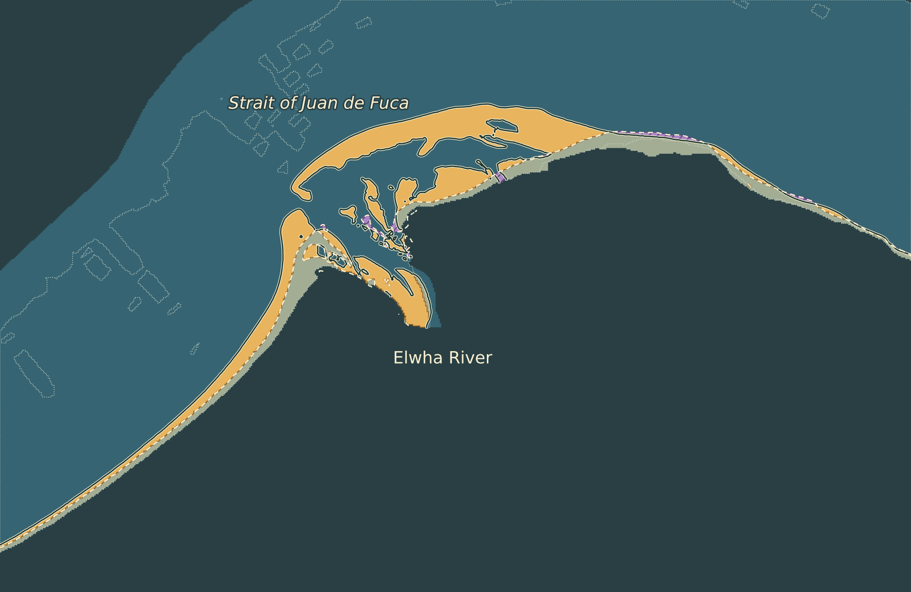

Elwha River Delta Washington
Where the Elwha
built land
Two dams held sediment upstream for decades. After they came down, the river carried sand and gravel to the Strait of Juan de Fuca and reshaped its own shoreline.


Compare the two surveyed high-water shorelines at the same scale.
Use + and − to zoom. Drag to pan.